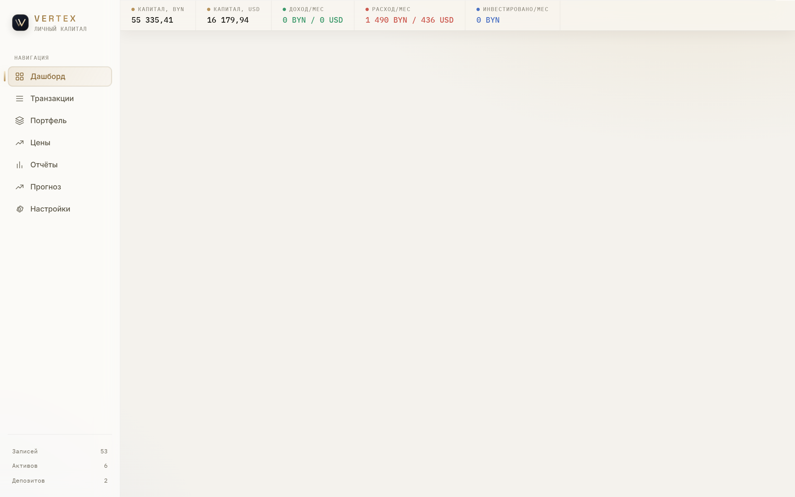
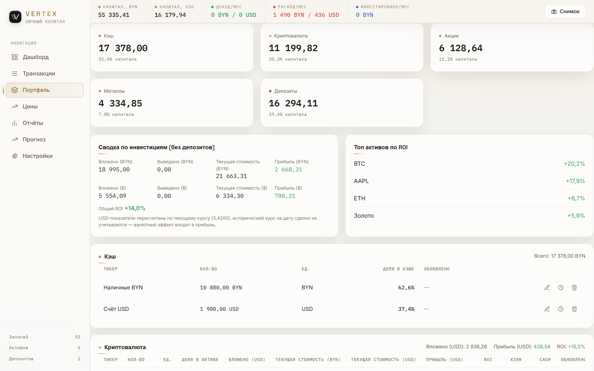
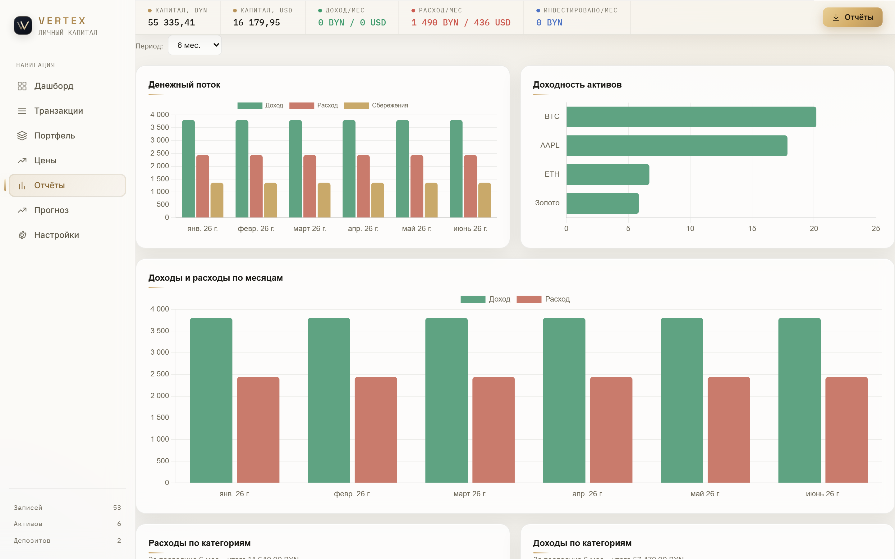
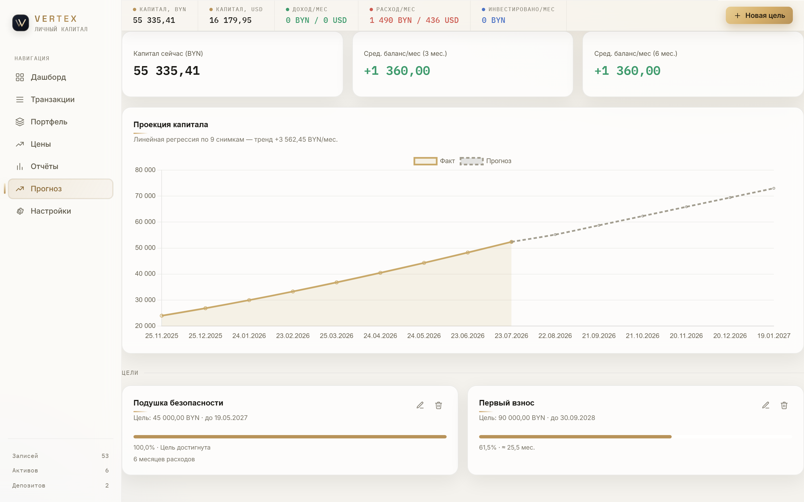

◈
Портфель
Активы по классам: кэш, крипта, акции, металлы, депозиты, займы. Доли, стоимость, доходность каждой позиции.
ROI · XIRR · CAGR
Vertex собирает активы, депозиты и денежные потоки в единую картину: реальная доходность, прогноз капитала и путь к финансовым целям — без таблиц и хаоса.

Семь разделов, которые закрывают полный цикл: от записи расхода до прогноза пенсии.
Активы по классам: кэш, крипта, акции, металлы, депозиты, займы. Доли, стоимость, доходность каждой позиции.
Доходы, расходы, переводы и инвестиции. Двойная запись: покупка актива автоматически списывает кэш.
Простые проценты и капитализация, накопленный доход на любую дату, автозакрытие по сроку.
Линейная регрессия по снимкам портфеля, проекция на 6 месяцев и расчёт прогресса к FIRE.
Курсы валют, криптовалюты, металлы и акции подтягиваются автоматически с резервными источниками.
Динамика доходов и расходов, структура трат, экспорт данных и готовый отчёт для анализа в ИИ.
Глассморфизм, мягкие переходы и моноширинные цифры — чтобы данные читались, а не отвлекали.



Данные на скриншотах — демонстрационные.
Без фреймворков во фронтенде: чистые ES-модули, слоистая архитектура и тесты на финансовую математику.
Открывается в браузере. Ничего не нужно устанавливать, регистрироваться и платить.
Открыть Vertex →